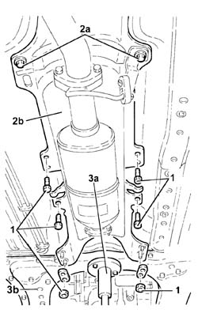
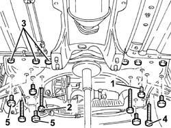
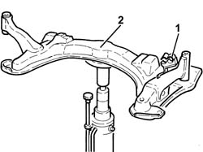

4410D13 front suspension beam - r r
- Path
- Procedures > 44 SUSPENSION AND WHEELS > 4410 FRONT SUSPENSION > 4410D frame and cross beam > 4410D13 front suspension beam - r r
- Kind
- repair procedure (removal / refitting; the operation number is the code)
- Applies to
- all engines; all production periods
- Interactive page
- https://sloeber94.github.io/elrnDB-a156/en/#/3238192
Applies to: all engines; all production periods
 Removing
Removing
 Refitting
Refitting1076B50 exhaust pipe attachment to engine - r + r
Proceed with the removal 1008A44 rear rigid mount - r r bearing in mind that there is a different set of specific operations for each version.
1008B20 power unit intermediate mount flexible block - replace
1. Undo the front bolts and nuts securing the gearlever and handbrake lever mount.
2. Slacken the rear bolts (2a) and lower as much as necessary the gearlever and handbrake lever mount.
3. Place a hydraulic jack (3a) complete with a suitable flange under the front suspension crossmember (3b).

Applies to: all engines; all production periods
1. Undo the bolts securing the anti-roll bar to the front suspension crossmember.
2. Undo the bolts fixing the power assisted steering box to the front suspension crossmember.
3. Undo the rear bolt securing the front suspension to the bodyshell.
4. Undo the side bolts securing the front suspension to the bodyshell.
5. Undo the bolts fixing the lower track control arms to the front suspension crossmember.

Applies to: all engines; all production periods
1. Lower the hydraulic jack as much as necessary for disconnectin gthe power steering pipes from the band on the suspension front crossmember.
2. Fully lower the hydraulic jack and remove the front suspension crossmember.
Separate the front suspension crossmember from the supporting flange and hydraulic jack.

Applies to: all engines; all production periods
Refitting
RemovingPlace the front suspension crossmember on the hydraulic jack.
Refit the front suspension crossmember in its seating and connect the power steering pipes to the band.
Tighten the bolts securing the lower track control arms to the front suspension crossmember to the recommended torque.
 | Fastening | Component | Ø | Value (daNm) |
|---|---|---|---|---|
- | Bolt | FRONT SUSPENSION LOWER LEVER | M10 | 6.2 - 6.8 |
Tighten the side bolts securing the front suspension crossmember to the bodyshell to the recommended torque.
| Fastening | Component | Ø | Value (daNm) |
|---|---|---|---|---|
- | Side bolt | ENGINE OR ROD ANCHORAGE BEAM | M12 | (Bodyshell side) 10.8 ÷ 13.2 |
Tighten the rear bolts (3a) and (3b) of the front suspension crossmember to torque.
| Fastening | Component | Ø | Value (daNm) |
|---|---|---|---|---|
- | Rear bolts | ENGINE OR ROD ANCHORAGE BEAM | M12 | (Bodyshell side) 10.8 ÷ 13.2 |
| Fastening | Component | Ø | Value (daNm) |
|---|---|---|---|---|
- | Rear bolt | ENGINE OR ROD ANCHORAGE BEAM | M10 | (Bodyshell side) 8.1 ÷ 9.9 |
Tighten the bolts securing the power steering box to the front suspension crossmember to torque.
| Fastening | Component | Ø | Value (daNm) |
|---|---|---|---|---|
- | Bolt | POWER STEERING BOX | M14 | 11.0 - 13.6 |
Tighten the bolts securing the anti-roll bar to the front suspension crossmember to torque.
| Fastening | Component | Ø | Value (daNm) |
|---|---|---|---|---|
- | Bolt | FRONT ANTI-ROLL BAR | M8 | 2.6 - 3.2 |
Remove the hydraulic jack and support tool from under the front suspension crossmember.
Tighten the nuts and bolts on the gearlever and handbrake lever mount.
1008B20 power unit intermediate mount flexible block - replace
Proceed with the refitting 1008A44 rear rigid mount - r r bearing in mind that there is a different set of specific operations for each version.
1076B50 exhaust pipe attachment to engine - r + r
Check and if necessary check the wheel geometry values 4450A10 front wheel geometry - check using optical equipment - includes front wheel tow-in adjustment if necessary .
Topics linked from this page (4)
- 1008A44 rear rigid mount - r r
- 1008B20 power unit intermediate mount flexible block - replace
- 1076B50 exhaust pipe attachment to engine - r + r
- 4450A10 front wheel geometry - check using optical equipment - includes front wheel tow-in adjustment if necessary
Topics that link to this page (10)
- E03 CLUTCH VIBRATING OR JERKING
- H01 VEHICLE DRIFT
- H20 STEERING WHEEL OSCILLATIONS/ VIBRATIONS / WHILST DRIVING
- H21 STEERING WHEEL OSCILLATIONS/ VIBRATIONS / WITH THE VEHICLE STATIONARY
- 1020D38 flywheel side oil seal - replace
- 1024B10 engine flywheel - r + r for versions with manual gearbox
- 1810A20 clutch - r + r
- 1820A24 thrust bearing linkage - r + r
- 2110A10 manual gearbox and differential - r + r
- 2110C22 gear input shaft seals - r r